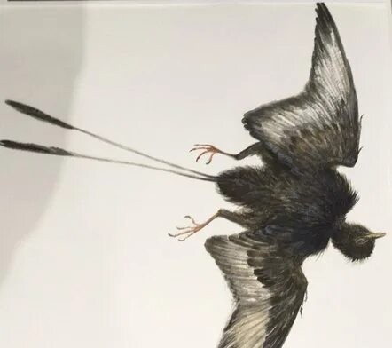
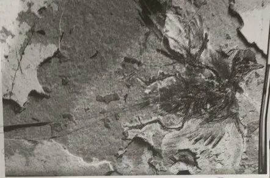
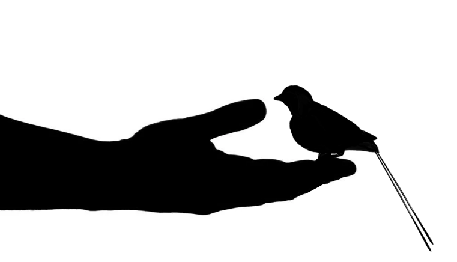

Early Cretaceous (~131 million years ago)
Hebei Province, China
Huajiying Formation, Jehol Biota
During the examination of specimen STM7-143, a plumage sample was taken from the distal tip of an outer primary flight feather of the right wing. Abundant eumelanosomes — associated with black and dark pigmentation in modern birds — were identified. Their high density and disordered, non-periodic spatial arrangement indicate a matte black coloration devoid of structural iridescence. No other plumage tracts have been analyzed, leaving the coloration across the rest of the body unknown.
Scanning electron microscopy (SEM).

Artist's impression of Protopteryx fengningensis.
Fossil specimen of Protopteryx fengningensis.
Size of Protopteryx.